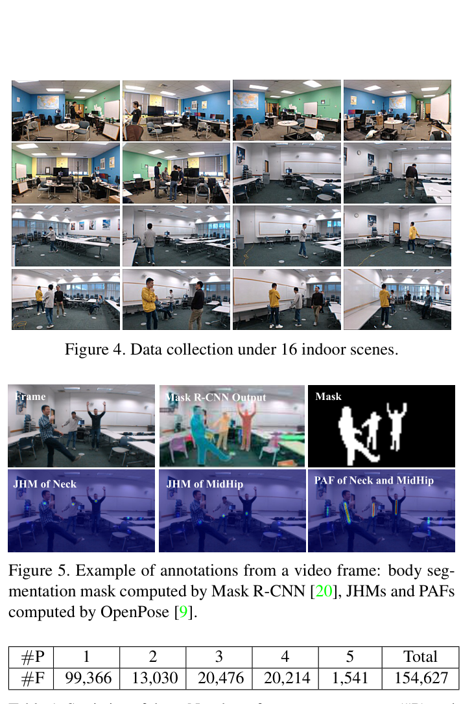
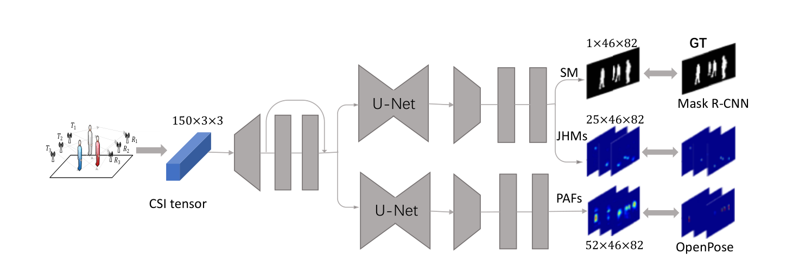
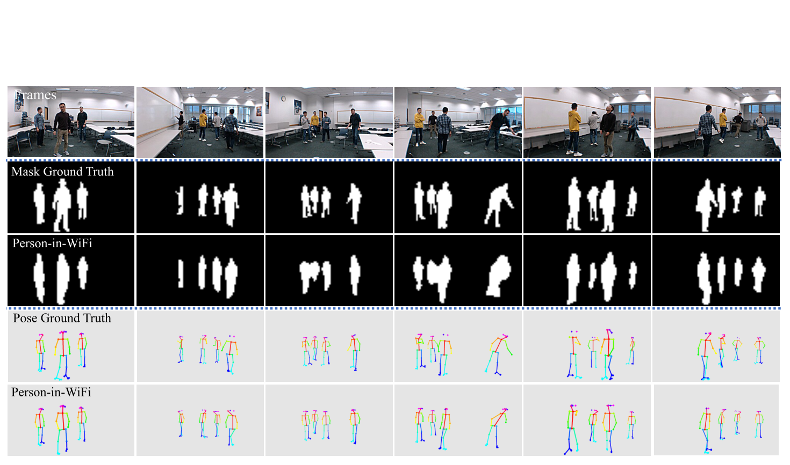
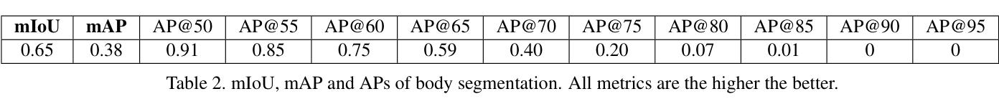
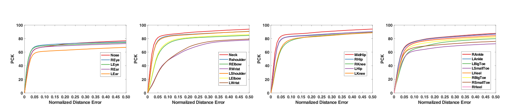
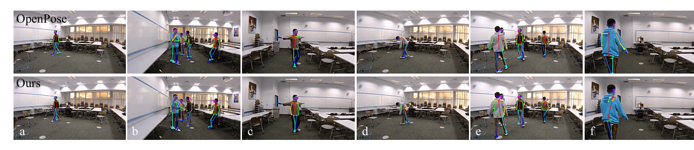
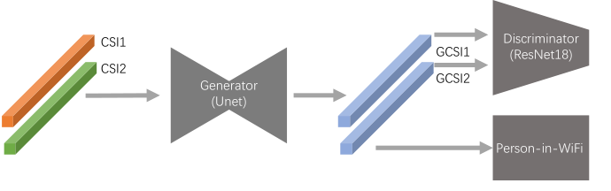

ICCV 2019
Publication
Person-in-WiFi: Fine-grained Person Perception using WiFi
Fei Wang (ZJU/CMU), Sanping Zhou (XJTU), Stanislav Panev (CMU), Jinsong Han (ZJU/Alibaba-ZJU), Dong Huang (CMU)
Person-in-WiFi shows that fine-grained human body segmentation and pose estimation can be learned directly from commodity WiFi CSI signals, using camera-derived annotations only during training.
Wi-Fi Human Perception
ZJU / CMU / XJTU / Alibaba-ZJU
Overview
Person-in-WiFi is an early fine-grained wireless perception system that asks a deliberately ambitious question: can ordinary WiFi signals support body-level perception tasks that are usually handled by cameras, radar, or LiDAR? The paper demonstrates that commodity IEEE 802.11n WiFi antennas and CSI measurements can be used to estimate human body segmentation masks and 2D body poses in an end-to-end deep learning pipeline.
The system uses RGB videos only as supervision during data collection: Mask R-CNN provides body segmentation labels, and OpenPose provides joint heatmaps and part affinity fields. At inference time, the model takes WiFi CSI as input and outputs person masks and pose estimates, making it robust to illumination and more privacy-preserving than camera-only sensing.
Main Contributions
- Introduces one of the first systems showing fine-grained person perception from off-the-shelf WiFi antennas and standard IEEE 802.11n CSI.
- Formulates WiFi-based person perception as a supervised mapping from 1D wireless signal observations to 2D spatial body representations.
- Builds a multi-task deep network that jointly predicts segmentation masks (SM), joint heatmaps (JHMs), and part affinity fields (PAFs) from CSI tensors.
- Proposes Matthew Weight to address the sparsity of keypoint and limb annotations, improving pose estimation over naive L2 supervision.
- Collects synchronized WiFi and RGB data across 16 indoor scenes, with up to 5 concurrent persons and 154,627 video frames.
Sensing Setup and Data
The hardware setup uses one transmitter group and one receiver group, each with three antennas, similar to a household WiFi router layout. CSI is recorded over 30 OFDM subcarriers centered at 2.4 GHz, while synchronized RGB videos provide the annotation source. The final input around one video frame is represented as a CSI tensor aligned with temporal samples, antenna pairs, and subcarriers.

Network Design
Person-in-WiFi maps CSI tensors to three complementary body representations. The network upsamples CSI features, uses residual convolution and U-Net style modules, and supervises the output against segmentation masks, joint heatmaps, and part affinity fields. This design lets the model learn spatial body structure from multiple transmitter-receiver antenna pairs and frequency samples.

Results
On body segmentation, Person-in-WiFi reports 0.65 mIoU and 0.38 mAP, with AP@50 = 0.91. For pose estimation, the paper evaluates PCK over 25 joints and shows strong performance on larger body parts such as torso, arms, and legs, while small or occluded joints remain harder.



Discussion and Limitations
The paper is careful about the gap between WiFi sensing and camera-based perception. On a manually annotated subset, camera-based methods report 0.83 mIoU for Mask R-CNN and 89.48 mPCK@0.20 for OpenPose, while Person-in-WiFi reports 0.66 mIoU and 78.75 mPCK@0.20. The main failure cases come from limited spatial resolution, rare poses, and incomplete annotations from a single camera view.

For deployment in unseen environments, the paper explores an adversarial training strategy to reduce scene-specific information in CSI. In preliminary experiments with 14 training scenes and 2 testing scenes, this improves segmentation mIoU from 0.12 to 0.24 and pose mPCK@0.20 from 19.34 to 31.06, suggesting that cross-environment generalization is important future work.

Resources
{kind=link}
{kind=link}
{kind=link}
Citation
@inproceedings{wang2019personinwifi,
title = {Person-in-WiFi: Fine-Grained Person Perception Using WiFi},
author = {Wang, Fei and Zhou, Sanping and Panev, Stanislav and Han, Jinsong and Huang, Dong},
booktitle = {Proceedings of the IEEE/CVF International Conference on Computer Vision (ICCV)},
pages = {5452--5461},
year = {2019}
}